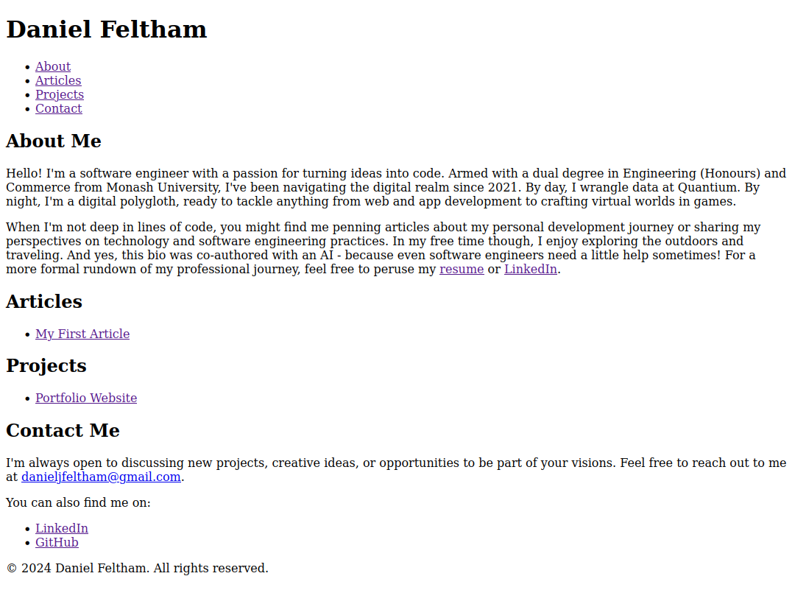

This project involved creating a portfolio website to showcase professional skills, projects, and articles. The website was developed with a focus on core functionality, essential content, and establishing design patterns, prioritizing simplicity and function over form. The goal was to create a solid foundation for future development.
Total planning time: 1 hour
Total development time: 2.5 hours
Content Rendering
Challenge: How to display Markdown content on the website
Process: Researched methods for rendering Markdown content
Considered client-side rendering with JavaScript libraries
Outcome: Better SEO and simpler initial implementation, aligning with the goal of a solid foundation
Image Generation for Articles
Challenge: Finding appropriate images for articles
Process: Used AI (Gemini) to generate custom images. Images aren't perfect but that adds to the appeal
Outcome: Avoided copyright concerns and created unique, relevant visuals efficiently
Using AI for Development
Challenge: Extracting development value by prompting an LLM
Process: Wrote HTML and content using Claude.ai due to familiarity
Outcome: Leveraged AI to draft content quickly, allowing focus on overall structure and implementation
Website Hosting
Challenge: How to host the website on the Internet
Process: Elected to host on Github Pages due to it being free and existing familiarity
Outcome: Website became publically available
This project served as an excellent starting point for creating an online presence. By focusing on essential content and a solid HTML structure, it laid the groundwork for future improvements and expansions. The process provided valuable insights into efficient web development practices and the effective use of AI tools in the development workflow.
